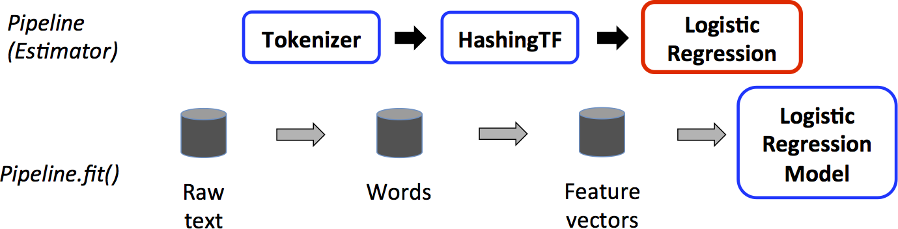

『 Spark 』11. spark 机器学习
2016-05-16
写在前面
本系列是综合了自己在学习spark过程中的理解记录 ＋ 对参考文章中的一些理解 ＋ 个人实践spark过程中的一些心得而来。写这样一个系列仅仅是为了梳理个人学习spark的笔记记录，所以一切以能够理解为主，没有必要的细节就不会记录了，而且文中有时候会出现英文原版文档，只要不影响理解，都不翻译了。若想深入了解，最好阅读参考文章和官方文档。
其次，本系列是基于目前最新的 spark 1.6.0 系列开始的，spark 目前的更新速度很快，记录一下版本号还是必要的。
最后，如果各位觉得内容有误，欢迎留言备注，所有留言 24 小时内必定回复，非常感谢。
Tips: 如果插图看起来不明显，可以：1. 放大网页；2. 新标签中打开图片，查看原图哦；3. 点击右边目录上方的 present mode 哦。
1. Spark! More than A Framework!
还记得我们的第一篇 Spark 博文里的这张图吗？其实我觉得 spark 有两个层次的概念：
- 一个通用的分布式计算框架，spark core
- 基于 spark core 设计，无缝实现的库，dataframe，sql，mllib，graphx，bagel, streaming, sparkR 以及一些第三方包
我之所以一开始很看好 spark，其中很大原因是第二条，也是下面这张图表达的意思：Spark, more than a framework.
之后准备写一些这些库的博文，我用过的只有 sql，dataframe，streaming，mlib，所以可能不会写 sparkr，bagel，graphx 的东西，不过这些网上也有不少优质文章的，哈哈。
今天再回顾回顾 mahine learning in Spark，进行一个小小的总结，之后再慢慢把一些实用的例子写下来。
2. Brief Intro to Machine Learning in Spark
spark 里的机器学习目前［1.6.0］有两个库：
- spark.mllib ，是原始的基于 rdd api 设计和实现的机器学习库
- spark.ml，是基于 dataframe api 设计和实现的机器学习库
官方推荐使用 spark.ml 来实现你的机器学习算法，并且已经说明 dataframe, datasets API 将会替换 rdd，所以自然 ml 也会在不远的将来替换 mllib 了。事实上，在 spark 2.0 中，就已经开始尝试先把 dataframe 和 datasets 统一成一个 datasets api 了。参考：slide Spark 2 0
从官方开发计划来说，我肯定是强烈推荐使用 spark.ml 库的，而且官方也说明了的，在 spark 2.x 之后，mllib 基本只做维护，其他新的 features 都是基于 ml 来开发了；不过除去这个方面，spark.ml 提供基于 dataframe/datasets 的 pipeline 执行流程，还有基于 spark sql 的高效的 code generation，所以不论从哪个方面来说，我觉得使用 dataframe/datasets，使用 spark.ml 都是一个比较明智的选择。
不过目前 ml 有一个不足的地方，ml 支持的算法目前没有 mllib 的多。
3. ML 核心概念
- DataFrame: Spark ML uses DataFrame from Spark SQL as an ML dataset, which can hold a variety of data types. 即机器学习数据集输入输出都以 dataframe 的格式提供。
- Pipeline Components:
- Transformer: A Transformer is an algorithm which can transform one DataFrame into another DataFrame.
- Estimator: An Estimator is an algorithm which can be fit on a DataFrame to produce a Transformer.
Transformer.transform()s and Estimator.fit()s are both stateless. In the future, stateful algorithms may be supported via alternative concepts. Each instance of a Transformer or Estimator has a unique ID, which is useful in specifying parameters (discussed below).
- Pipeline: A Pipeline chains multiple Transformers and Estimators together to specify an ML workflow. That’s runing a sequence of algorithms to process and learn from data.
- Parameter: All Transformers and Estimators now share a common API for specifying parameters.
4. ML Pipeline 介绍
In machine learning, it is common to run a sequence of algorithms to process and learn from data. E.g., a simple text document processing workflow might include several stages:
- Split each document’s text into words.
- Convert each document’s words into a numerical feature vector.
- Learn a prediction model using the feature vectors and labels.
Spark ML represents such a workflow as a Pipeline, which consists of a sequence of PipelineStages (Transformers and Estimators) to be run in a specific order.
4.1 工作原理
A Pipeline is specified as a sequence of stages, and each stage is either a Transformer or an Estimator. These stages are run in order, and the input DataFrame is transformed as it passes through each stage. For Transformer stages, the transform() method is called on the DataFrame. For Estimator stages, the fit() method is called to produce a Transformer (which becomes part of the PipelineModel, or fitted Pipeline), and that Transformer’s transform() method is called on the DataFrame.
We illustrate this for the simple text document workflow. The figure below is for the training time usage of a Pipeline.

Above, the top row represents a Pipeline with three stages. The first two (Tokenizer and HashingTF) are Transformers (blue), and the third (LogisticRegression) is an Estimator (red).
The bottom row represents data flowing through the pipeline, where cylinders indicate DataFrames. The Pipeline.fit() method is called on the original DataFrame, which has raw text documents and labels. The Tokenizer.transform() method splits the raw text documents into words, adding a new column with words to the DataFrame. The HashingTF.transform() method converts the words column into feature vectors, adding a new column with those vectors to the DataFrame. Now, since LogisticRegression is an Estimator, the Pipeline first calls LogisticRegression.fit() to produce a LogisticRegressionModel. If the Pipeline had more stages, it would call the LogisticRegressionModel’s transform() method on the DataFrame before passing the DataFrame to the next stage.
A Pipeline is an Estimator. Thus, after a Pipeline’s fit() method runs, it produces a PipelineModel, which is a Transformer. This PipelineModel is used at test time; the figure below illustrates this usage.

In the figure above, the PipelineModel has the same number of stages as the original Pipeline, but all Estimators in the original Pipeline have become Transformers. When the PipelineModel’s transform() method is called on a test dataset, the data are passed through the fitted pipeline in order. Each stage’s transform() method updates the dataset and passes it to the next stage.
Pipelines and PipelineModels help to ensure that training and test data go through identical feature processing steps.
13. Next
Spark 2.0 马上就要 release 了，下次我们就来看看 spark 2.0 释放了哪些重磅炸弹吧，哈哈～～～
14. 打开微信，扫一扫，点一点，棒棒的，^_^

参考文章
- Spark 2 0
slideSpark 2 0- Spark ML Guide
- Preview of Apache Spark 2.0 now on Databricks Community Edition
本系列文章链接
- 『 Spark 』1. spark 简介
- 『 Spark 』2. spark 基本概念解析
- 『 Spark 』3. spark 编程模式
- 『 Spark 』4. spark 之 RDD
- 『 Spark 』5. 这些年，你不能错过的 spark 学习资源
- 『 Spark 』6. 深入研究 spark 运行原理之 job, stage, task
- 『 Spark 』7. 使用 Spark DataFrame 进行大数据分析
- 『 Spark 』8. 实战案例 ｜ Spark 在金融领域的应用 ｜ 日内走势预测
- 『 Spark 』9. 搭建 IPython + Notebook + Spark 开发环境
- 『 Spark 』10. spark 应用程序性能优化｜12 个优化方法
- 『 Spark 』11. spark 机器学习
- 『 Spark 』12. Spark 2.0 特性介绍
- 『 Spark 』13. Spark 2.0 Release Notes 中文版
- 『 Spark 』14. 一次 Spark SQL 性能优化之旅